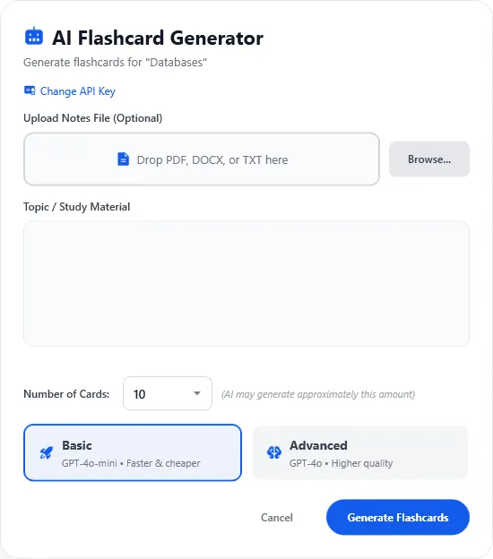
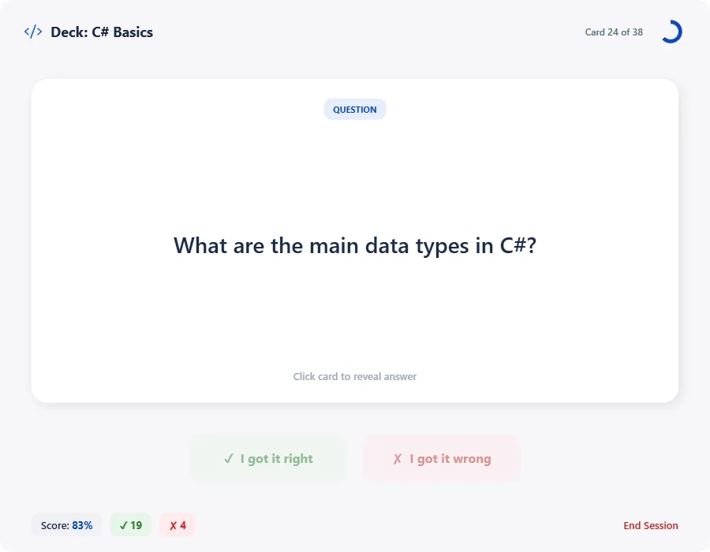

StudySnap
A powerful C# WPF study tool featuring AI generation and data persistence.
How to Run: Download the zip file, extract the folder, and open StudySnap.exe.
Highlights
Features
- AI Generation: Create decks instantly using the OpenAI API with file attachment support.
- Study Mode: Review concepts with a clean, focused UI and accuracy tracking.
- Deck Management: Create, edit, search, and filter flashcard decks easily.
- Data Persistence: JSON-based local storage ensures your data is always saved.
Tech Stack
- Language: C#
- Framework: WPF (Windows Presentation Foundation)
- Architecture: Object-Oriented Design (OOD)
- Data: Local JSON Serialization
Application Overview
From deck creation to active recall, StudySnap provides a complete loop for students.

AI Flashcard Generator

Active Study Session
Project Status
This project began as a school assignment and is now actively maintained as an independent project.
- Current Focus: UI/UX refinements and performance optimization.
- Planned: Cloud sync, backup functionality, and advanced analytics.